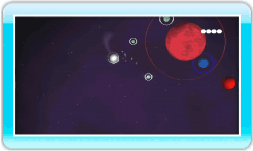
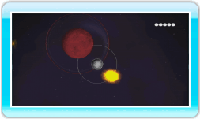

11 |
Réussir les niveaux |
 |
|
Une fois que vous maîtrisez les bases d’Orbient, utilisez vos compétences pour accomplir les tâches suivantes qui vous permettront de terminer les niveaux.

● Absorbez les astres bleus Tout d’abord, rencontrez un astre bleu pour augmenter votre taille. Une fois que votre astre est plus grand, les astres rouges que vous ne pouviez absorber deviennent bleus: désormais, vous pouvez les rencontrer. Si vous n’êtes pas sûr de l’endroit où vous devez aller ensuite, appuyez sur 
● Prenez un astre gris comme satellite Si vous vous déplacez avec précaution à côté d’un astre gris, vous pouvez en faire un satellite. Si vous terminez un niveau avec des satellites, vous gagnerez des points bonus proportionnels à leur nombre. Vos vies augmenteront aussi en fonction du nombre de satellites que vous avez. Essayez d’obtenir le plus de satellites possible avant de terminer un niveau!

● Prenez l’astre-objectif comme satellite Lorsque la taille de votre astre atteint celle de l’astre-objectif, ce dernier devient jaune et brille. Lorsque vous transformez l’astre-objectif en satellite, vous terminez le niveau. La méthode à employer pour faire de l’astre-objectif un satellite est la même que celle utilisée avec un astre gris. Note: Vous ne pouvez pas rencontrer un astre-objectif. Si vous en percutez un, vous perdez une vie. ● Ecran des résultats Les points gagnés à chaque niveau sont calculés en fonction des critères ci-dessous. Si vous terminez un niveau après avoir pris une lune comme satellite, une lune apparaît à droite des points attribués en BONUS.
|
 et regardez la carte du niveau.
et regardez la carte du niveau. |
 |
 |